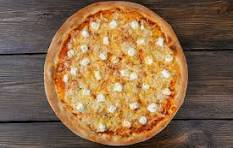

Pizza Recipes

Si vous raffolez des pizzas, vous avez forcément déjà goûté à la pizza 3 fromages . Je vous propose de la réaliser vous-même, c’est très simple : il vous suffit de choisir vos fromages préférés, en veillant à bien équilibrer leurs goûts et leurs textures : un fromage au goût puissant, un autre fondant à souhait et un dernier à pâte dur pour qu’il gratine !
Ingredients
- 1 Pâte à Pizza
- 60 g de Gorgonzola
- 125 g de Mozzarella
- 70 g de Gruyère Râpé
Étapes
- Coupez en tranches le gorgonzola et la mozzarella.
- Étalez la pâte à pizza sur une plaque allant au four et recouverte de papier sulfurisé. Ajoutez le gruyère, la mozzarella et le gorgonzola.
- Faites cuire dans le bas du four à 230 °C pendant 14 à 16 minutes. La pizza doit être bien dorée.